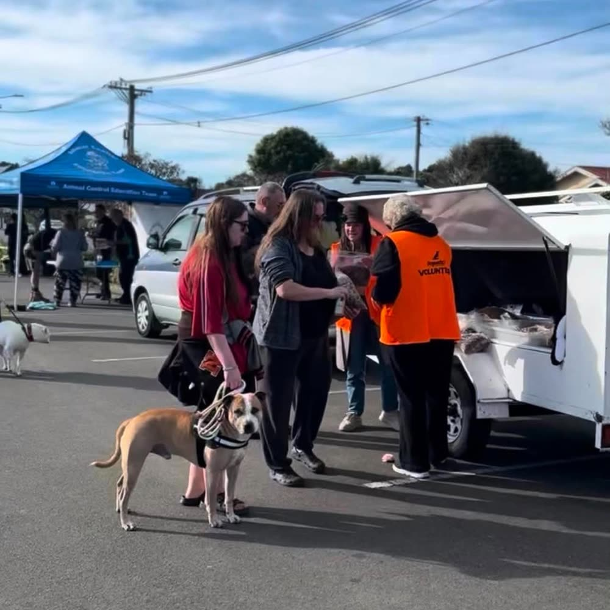

Our Op Shop of the Month is Dogwatch Variety Shop in New Brighton. It's tucked into one of Christchurch's more overlooked op-shopping pockets, out where the streets start smelling like salt air, and it's exactly the kind of shop that rewards people willing to make the trip rather than sticking to the central suburbs.
Prices here are consistently reasonable across the board, whether you're after clothing, books, homewares or one of the odder miscellaneous finds that tend to turn up on the shelves. Nothing feels marked up for the sake of it, which makes Dogwatch the kind of shop you can drop into regularly rather than saving it up for a special occasion. It rewards a proper look too — the stock turns over often enough that a quiet visit one week can be followed by a genuinely good haul the next.
What really sets Dogwatch apart, though, is how much it gives back beyond the shop floor. It's recently run two huge vaccination events for the community, giving away free dog food, vaccines and wormer to local pet owners. Events like that aren't just a nice gesture — for plenty of pet owners, keeping up with vaccinations and parasite control is a real cost, and having a local shop step in and cover that gap makes a genuine difference. It says a lot about a shop when its impact on the area goes well beyond what's on the racks.
If you're already out that way, it's worth pairing a visit with a walk along New Brighton's pier or beach — it turns a quick op-shop stop into a proper afternoon out. Between the fair prices, the steady stream of fresh stock, and the community work happening alongside it, Dogwatch is always worth a visit.